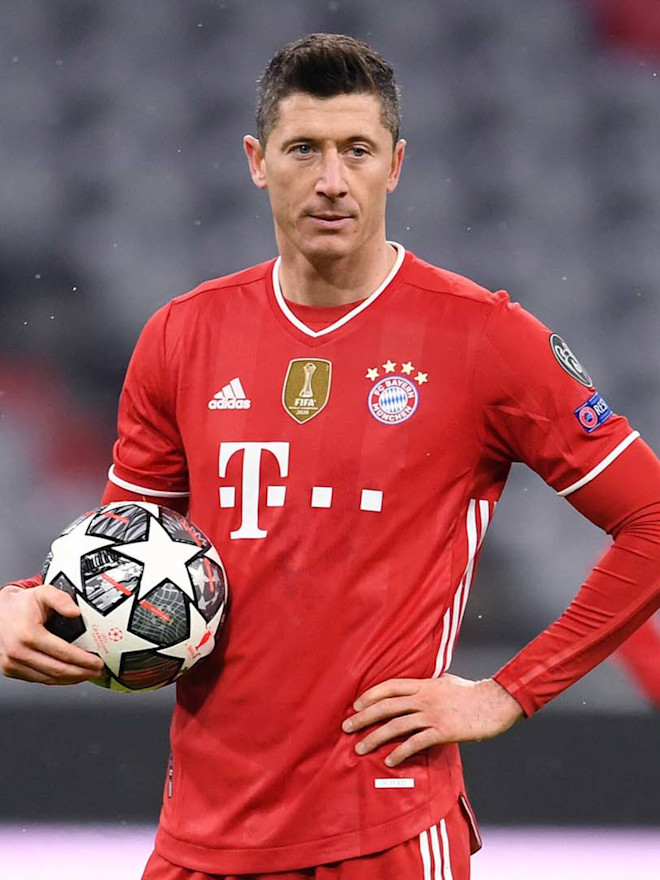

Lionel Messi
Lionel Andrés Messi(born 24 June 1987) is an Argentine professional footballer who plays as a forward or an attacking midfielder and captains the Argentina national team.

Ángel Di María
Ángel Fabián Di María (born 14 February 1988) is an Argentine professional footballer who plays for Ligue 1 club Paris Saint-Germain and the Argentina national team.

Cristiano Ronaldo
Cristiano Ronaldo (born 5 February 1985) is a Portuguese professional footballer who plays as a forward for Serie A club Juventus and captains the Portugal national team.

Mohamed Salah
Mohamed Salah Hamed Mahrous Ghaly(born 15 June 1992) is an Egyptian professional footballer who plays as a forward for Premier League club Liverpool and captains the Egypt national team.

Robert Lewandowski
Robert Lewandowski (born 21 August 1988) is a Polish professional footballer who plays as a striker for Bundesliga club Bayern Munich and is the captain of the Poland national team.

Neymar
Neymar da Silva Santos Júnior (born 5 February 1992), known as Neymar, is a Brazilian professional footballer who plays as a forward for Ligue 1 club Paris Saint-Germain and the Brazil national team.
Gerardo Higuaín
Gonzalo Gerardo Higuaín (born 10 December 1987) is an Argentine professional footballer who plays as a striker and serves as captain for Major League Soccer club Inter Miami. Nicknamed El Pipita or Pipa.
Damián Emiliano
Damián Emiliano Martínez Romero (born 2 September 1992) is an Argentine professional footballer who plays as a goalkeeper for Premier League club Aston Villa and the Argentina national team.
Alisson Ramses Becker
Alisson Ramses Becker (born 2 October 1992), commonly known as Alisson, is a Brazilian professional footballer who plays as a goalkeeper for Premier League club Liverpool and the Brazil national team

Kylian Mbappé
Kylian Mbappé Lottin (born 20 December 1998) is a French professional footballer who plays as a forward for Ligue 1 club Paris Saint-Germain and the France national team. Mbappé began his senior career with Ligue 1 club Monaco, making his professional debut in 2015, aged 16.
Sergio Ramos
Sergio Ramos García (born 30 March 1986) is a Spanish professional footballer who plays for Ligue 1 club Paris Saint-Germain and the Spain national team.
Mostafa Benzema
Karim Mostafa Benzema (born 19 December 1987) is a French professional footballer who plays as a striker for Spanish club Real Madrid and the France national team.